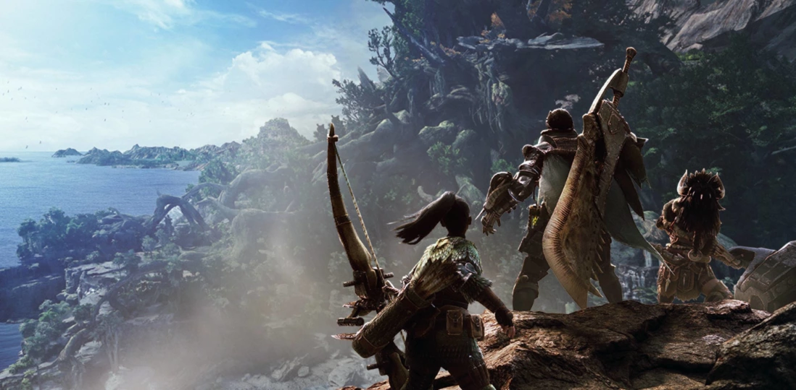

Виды урона оружия: режущий, ударный, проникающий
Каждый вид оружия и снарядов в игре обладает одним из трёх типов урона.
Это важно: выбирая правильное снаряжение, можно «выбить» из монстра
нужные части, например, отрубив хвост.
- Режущий урон. Как понятно из названия, оружие с таким уроном
буквально режет монстров.Соответственно, повышается шанс отрубить
хвост или, например, рога. Отлично подходит против монстров без брони
(у некоторых существ изначально есть броня, или они могут отрастить её во время боя). - Ударный урон даёт возможность наносить большой ущерб монстрам, оглушая их или сбивая куски брони.
- Проникающий урон. Отличный пример здесь — проникающие снаряды для
лукорудия, которые вгрызаются в плоть монстра и пролетают насквозь,
нанося урон несколько раз.